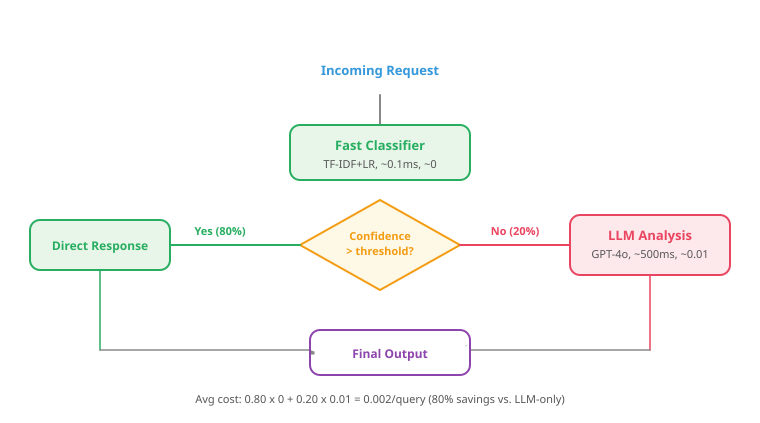

"The secret to a great hybrid pipeline is the same as the secret to a great marriage: knowing when to let the other partner handle things."
Label, Diplomatically Wise AI Agent
The 80/20 insight that drives hybrid architectures. In most production systems, roughly 80% of incoming requests are straightforward cases that a fast, cheap classifier can handle correctly. The remaining 20% are complex, ambiguous, or novel cases that genuinely benefit from LLM reasoning. A well-designed hybrid pipeline routes each request to the cheapest model capable of handling it correctly, achieving LLM-level quality at a fraction of the cost. Building on the decision framework from Section 13.1, this section covers the major hybrid patterns: classical triage with LLM escalation, ensemble voting, cascading model architectures, and the router pattern.
You do not need the best model for every request; you need the right model for each request's difficulty. Cheap classifier handles the easy 80%, LLM handles the gnarly 20%, and the user cannot tell the difference. The router is the architecture.
Prerequisites
This section assumes you have read the decision framework in Section 13.1 and the feature extraction patterns in Section 13.2. The API engineering best practices from Section 11.3 (retries, caching, circuit breakers) are directly applied in the pipeline patterns here.
13.3.1 Pattern: Classical Triage + LLM Escalation
The triage pattern is the most common hybrid architecture in production. A fast, cheap classifier processes every incoming request. When the classifier is confident in its prediction, the result is returned directly. When the classifier is uncertain (low confidence), the request is escalated to an LLM for more careful analysis. The figure above illustrates this routing logic, and Code Fragment 13.3.1a shows the approach in practice.
A classifier reporting 0.95 confidence does not necessarily mean it is correct 95% of the time. Most neural network classifiers are poorly calibrated: they tend to be overconfident. If you set your escalation threshold at 0.90 without calibrating the classifier first, you may route too few requests to the LLM, degrading overall accuracy on the hard cases. Always calibrate your classifier's confidence scores (using techniques like Platt scaling or temperature calibration) on a held-out set before setting production thresholds. Plot a reliability diagram to verify that predicted probabilities match observed frequencies.
Who: An ML engineer at a mid-size SaaS company handling 50,000 support tickets per day.
Situation: Every ticket was being routed through GPT-4 for intent classification, costing $4,500 per month.
Problem: The CEO wanted the same quality at one-fifth the cost.
Dilemma: Switching entirely to a fine-tuned BERT classifier would save money but miss nuanced tickets. Keeping GPT-4 on everything was accurate but expensive.
Decision: They deployed a confidence-threshold triage: a distilBERT classifier handled tickets where its confidence exceeded 0.92 (about 78% of volume), and only uncertain tickets escalated to GPT-4.
Result: Monthly API costs dropped from $4,500 to $680, while classification accuracy stayed within 0.3% of the all-GPT-4 baseline.
Lesson: You do not need the best model for every request; you need the right model for each request's difficulty level.

Why the confidence threshold is the single most important parameter in a hybrid system. Set it too low, and the cheap classifier handles cases it gets wrong, degrading overall quality. Set it too high, and nearly everything gets escalated to the expensive LLM, eliminating the cost savings. The right threshold depends on your tolerance for classifier errors: if a wrong classification has low consequences (e.g., routing a ticket to the wrong department), you can use a lower threshold. If a wrong classification has high consequences (e.g., medical triage), use a higher threshold and let the LLM handle a larger share. Calibrating this threshold requires measuring classifier accuracy at different confidence levels on a holdout set, as covered in Chapter 42 on evaluation.
13.3.1.1 Implementing Confidence-Based Routing
The following implementation (Code Fragment 0) shows this approach in practice.
Code Fragment 13.3.1b shows the Anthropic Messages API.
# Use a small LLM to classify request difficulty and select a model tier
# The router returns a JSON decision with tier, reasoning, and difficulty score
import numpy as np
from sklearn.feature_extraction.text import TfidfVectorizer
from sklearn.linear_model import LogisticRegression
from dataclasses import dataclass
@dataclass
class TriageResult:
category: str
confidence: float
source: str # "classifier" or "llm"
cost: float
class TriageRouter:
"""Routes requests to classifier or LLM based on confidence."""
def __init__(self, confidence_threshold: float = 0.85):
self.threshold = confidence_threshold
self.vectorizer = TfidfVectorizer(max_features=5000, ngram_range=(1, 2))
self.classifier = LogisticRegression(max_iter=1000)
self.is_fitted = False
def fit(self, texts: list[str], labels: list[str]):
"""Train the fast classifier."""
X = self.vectorizer.fit_transform(texts)
self.classifier.fit(X, labels)
self.is_fitted = True
def classify(self, text: str) -> TriageResult:
"""Route to classifier or LLM based on confidence."""
# Step 1: Get classifier prediction and confidence
X = self.vectorizer.transform([text])
probas = self.classifier.predict_proba(X)[0]
max_confidence = probas.max()
predicted_class = self.classifier.classes_[probas.argmax()]
# Step 2: Route based on confidence
if max_confidence >= self.threshold:
return TriageResult(
category=predicted_class,
confidence=max_confidence,
source="classifier",
cost=0.00001
)
else:
# Escalate to LLM (simulated here)
llm_result = self._call_llm(text)
return TriageResult(
category=llm_result,
confidence=0.95, # LLM confidence (estimated)
source="llm",
cost=0.003
)
def _call_llm(self, text: str) -> str:
"""Call LLM for complex cases (simplified)."""
# In production: call OpenAI / Anthropic API
return "complex_case"
# Train and evaluate
train_texts = [
"charged twice", "double charge", "billing error",
"app crashes", "error message", "won't load",
"change email", "update address", "password reset",
"package lost", "shipping delay", "not delivered",
"pricing info", "business hours", "return policy",
] * 20
train_labels = [
"billing", "billing", "billing",
"technical", "technical", "technical",
"account", "account", "account",
"shipping", "shipping", "shipping",
"general", "general", "general",
] * 20
router = TriageRouter(confidence_threshold=0.85)
router.fit(train_texts, train_labels)
# Test with various difficulty levels
test_cases = [
"I was charged twice on my credit card", # Easy: billing
"The page gives me a 500 error", # Easy: technical
"I want to change my account email and also get a refund", # Hard: mixed
"Your competitor offers better rates", # Hard: ambiguous
]
print("Triage Results:")
print("-" * 70)
for text in test_cases:
result = router.classify(text)
print(f" Text: '{text[:50]}...'")
print(f" Category: {result.category} | "
f"Confidence: {result.confidence:.2f} | "
f"Source: {result.source} | "
f"Cost: ${result.cost:.5f}")
print()Code Fragment 13.3.2a implements a three-tier cascade router: regex rules handle obvious patterns at near-zero cost, a small BERT model catches mid-complexity queries, and a full LLM handles only the cases that need it.
# Implement a cascade router that tries cheap models first
# Each tier has a confidence threshold; low-confidence results escalate to the next tier
from dataclasses import dataclass
from typing import Optional
@dataclass
class CascadeResult:
prediction: str
confidence: float
tier: int
total_cost: float
total_latency_ms: float
class ModelCascade:
"""Cascading model architecture: small -> medium -> large."""
def __init__(self, confidence_thresholds: list[float]):
self.thresholds = confidence_thresholds
# In production, these would be real model instances
self.tiers = [
{"name": "Regex/Rules", "cost": 0.0, "latency_ms": 0.01},
{"name": "BERT-tiny", "cost": 0.0001, "latency_ms": 5},
{"name": "GPT-4o-mini", "cost": 0.003, "latency_ms": 400},
]
def predict(self, text: str) -> CascadeResult:
total_cost = 0.0
total_latency = 0.0
for i, (tier, threshold) in enumerate(
zip(self.tiers, self.thresholds + [0.0])
):
total_cost += tier["cost"]
total_latency += tier["latency_ms"]
# Simulate prediction (in production: actual model call)
prediction, confidence = self._run_tier(i, text)
if confidence >= threshold or i == len(self.tiers) - 1:
return CascadeResult(
prediction=prediction,
confidence=confidence,
tier=i + 1,
total_cost=total_cost,
total_latency_ms=total_latency,
)
def _run_tier(self, tier: int, text: str) -> tuple[str, float]:
"""Simulate tier prediction. Replace with real models."""
import random
random.seed(hash(text) + tier)
if tier == 0: # Regex
if any(kw in text.lower() for kw in ["charged", "refund", "bill"]):
return "billing", 0.99
return "unknown", 0.30
elif tier == 1: # Small model
return "billing", 0.75 + random.random() * 0.2
else: # Large LLM
return "billing", 0.95
# Demo
cascade = ModelCascade(confidence_thresholds=[0.90, 0.85])
test_texts = [
"I was charged twice on my bill", # Regex catches this
"The interface feels sluggish lately", # Needs small model
"I have a complex multi-part question", # Needs LLM
]
print("Cascade Routing Results:")
print("=" * 65)
for text in test_texts:
result = cascade.predict(text)
print(f" '{text[:45]}'")
print(f" Tier {result.tier} | Conf: {result.confidence:.2f} | "
f"Cost: ${result.total_cost:.5f} | "
f"Latency: {result.total_latency_ms:.1f}ms\n")13.3.2 Pattern: LLM Router
Why smaller specialized models can beat LLMs for routing. Using GPT-4 to decide whether a query needs GPT-4 is circular and expensive. Instead, train a small model (a fine-tuned classifier or even GPT-4o-mini with a focused prompt) specifically on the routing decision. The routing model only needs to classify query complexity, not solve the actual problem. This is a much simpler task that a small model handles well. In practice, a fine-tuned DistilBERT classifier trained on 2,000 labeled routing examples can match GPT-4o-mini's routing accuracy at 1/100th the latency and near-zero cost, making it the preferred approach for high-volume systems.
The router pattern uses a lightweight model (or even an LLM itself) to analyze the incoming request and decide which model should handle it. This concept extends naturally to the agentic architectures covered later, where routing decisions become part of a larger planning loop. Unlike the cascade, which always starts at the cheapest tier, the router can skip directly to the appropriate tier based on the request complexity. Code Fragment 13.3.3 shows this approach in practice.
# Use a small LLM to classify request difficulty and select a model tier
# The router returns a JSON decision with tier, reasoning, and difficulty score
import openai
import json
# Initialize OpenAI client (reads OPENAI_API_KEY from env)
client = openai.OpenAI()
def route_request(text: str) -> dict:
"""Use a small LLM to decide which model should handle a request."""
# Send chat completion request to the API
response = client.chat.completions.create(
model="gpt-4o-mini",
messages=[
{"role": "system", "content": """Analyze this request and decide
which model tier should handle it. Return JSON:
- tier: "regex" for simple pattern matching (dates, emails, numbers)
- tier: "classifier" for standard classification with clear categories
- tier: "small_llm" for moderate complexity needing some reasoning
- tier: "large_llm" for complex, ambiguous, or multi-step reasoning
Also return:
- reasoning: one sentence explaining why
- estimated_difficulty: 1-5 scale"""},
{"role": "user", "content": text}
],
response_format={"type": "json_object"},
temperature=0,
max_tokens=100,
)
# Extract the generated message from the API response
return json.loads(response.choices[0].message.content)
# Example routing decisions
requests = [
"Extract all email addresses from this text: contact us at info@corp.com",
"Is this customer review positive or negative: 'Great product!'",
"Summarize the key points from this 3-page contract",
"Given our Q3 financials and market trends, should we expand to Europe?",
]
print("Router Decisions:")
print("=" * 70)
for req in requests:
decision = route_request(req)
print(f" Request: '{req[:55]}...'")
print(f" Tier: {decision['tier']} | "
f"Difficulty: {decision['estimated_difficulty']}/5")
print(f" Reason: {decision['reasoning']}\n")Using an LLM as the router adds cost to every single request. If the router itself costs $0.0003 per call, you need the routing savings to exceed this overhead. For high-volume systems, train a small BERT classifier as the router instead, or use simple heuristics (input length, keyword presence, question complexity score) to avoid the LLM router cost entirely.
Routing is the single highest-leverage decision in a hybrid system. Think of it as a hospital triage nurse: the nurse (router) does not treat patients, but by correctly sending each patient to the right ward (fast classifier, small LLM, or large LLM), they determine the entire system's cost and quality profile. A router that sends 10% more requests to the cheap model saves 10% on LLM costs; a router that misroutes complex queries to a fast classifier degrades quality for those users. The routing threshold is your most important hyperparameter.
Average latency hides tail latency spikes that frustrate users. Always measure and optimize for p95 or p99 latency. A system with 200ms average but 5-second p99 feels slower than one with 400ms average and 600ms p99.
Who: An ML platform team at a B2B software company handling 25,000 support tickets per day across 12 product categories.
Situation: They initially deployed GPT-4 to classify every ticket into product category, urgency level, and required expertise. Accuracy was excellent (96%), but the system cost $15,000/month in API fees.
Problem: Leadership approved a $5,000/month budget for the classification system. The team needed a 3x cost reduction without significant accuracy loss.
Dilemma: They could switch to a cheaper model like GPT-3.5 (lower quality), train a dedicated classifier (requires labeled data and maintenance), or build a triage system that routes easy tickets to a cheap classifier and only escalates ambiguous ones to GPT-4.
Decision: They implemented a two-tier triage architecture: a fine-tuned DistilBERT classifier handled straightforward tickets (single product, clear language), while GPT-4 handled ambiguous tickets (multi-product issues, vague descriptions, emotional language).
How: They fine-tuned DistilBERT on 10,000 tickets labeled by GPT-4 (the LLM bootstrap pattern). The classifier output a confidence score; tickets with confidence above 0.85 were auto-classified, and the rest were escalated to GPT-4. They tuned the threshold on a 1,000-ticket validation set reviewed by human agents.
Result: The DistilBERT model handled 78% of tickets at $0.0001 per ticket (essentially free). GPT-4 handled the remaining 22%. Overall accuracy was 94.5% (down only 1.5% from full GPT-4), and monthly costs dropped to $3,800, well within budget.
Lesson: The triage pattern (cheap model for easy cases, expensive model for hard cases) is the single most effective cost optimization for classification workloads, often achieving 70% to 80% cost reduction with minimal quality loss.
The "triage" pattern in hybrid pipelines mirrors how hospital emergency rooms work: a nurse (the lightweight classifier) quickly assesses each patient (request) and routes them to the appropriate specialist (model tier). Most cases go to the general practitioner (small model), and only the truly complex ones see the surgeon (frontier LLM).
Adaptive pipeline architectures. Research teams are building pipelines that dynamically adjust their ML/LLM mix based on real-time quality metrics and cost budgets. When quality dips below a threshold, the system automatically routes more traffic through larger models; when budgets tighten, it shifts toward cheaper classical components.
Pipeline compilation. Tools like DSPy compile multi-step LLM pipelines into optimized execution graphs, automatically selecting which steps need large models and which can use small models or classical components, based on validation set performance.
Observability for hybrid systems. Monitoring frameworks like LangSmith and Arize are adding specific support for hybrid ML/LLM pipelines, tracking quality and cost at each pipeline stage to identify optimization opportunities, a topic explored further in Section 42.6.
Objective
Let us put these patterns together into a complete customer support pipeline that combines a classifier for routing, an LLM for complex extraction, and a rules engine for execution. This kind of multi-stage pipeline is also the foundation for the conversational AI systems we build later in the book.
Setup
Standard Python with dataclasses, re, and json is enough for the worked example below; the _llm_extract method is stubbed for clarity, so swap in an OpenAI or Anthropic call when you wire it to a real provider. Three sample tickets at the bottom of the code exercise both the rule-based and LLM-escalation branches.
Steps
The code below shows the three-stage flow: a fast classifier assigns a category, high-confidence simple categories take the rule-based branch, and everything else escalates to the LLM extractor. A small action table maps category to downstream action. Trace each sample ticket through the pipeline to see why T-001 and T-002 hit the cheap branch while T-003 escalates.
# Define the routing tier configuration with cost and latency parameters
# The cascade evaluates tiers in order of increasing cost
from dataclasses import dataclass, field
from typing import Optional
import json
@dataclass
class TicketAnalysis:
ticket_id: str
raw_text: str
category: str
routing_tier: str
extracted_info: dict = field(default_factory=dict)
action: str = ""
total_cost: float = 0.0
class CustomerSupportPipeline:
"""Three-stage pipeline: classify -> extract -> execute."""
def __init__(self):
self.simple_categories = {"billing", "shipping", "account"}
self.actions = {
"billing": "initiate_refund_review",
"shipping": "create_tracking_inquiry",
"account": "send_account_update_link",
"technical": "create_engineering_ticket",
"general": "route_to_agent",
}
def process_ticket(self, ticket_id: str, text: str) -> TicketAnalysis:
analysis = TicketAnalysis(ticket_id=ticket_id, raw_text=text,
category="", routing_tier="")
# Stage 1: Fast classification
category, confidence = self._classify(text)
analysis.category = category
if confidence > 0.85 and category in self.simple_categories:
# Stage 2a: Rule-based extraction for simple cases
analysis.routing_tier = "classifier + rules"
analysis.extracted_info = self._rule_extract(text, category)
analysis.total_cost = 0.00001
else:
# Stage 2b: LLM extraction for complex cases
analysis.routing_tier = "classifier + llm"
analysis.extracted_info = self._llm_extract(text)
analysis.total_cost = 0.005
# Stage 3: Determine action
analysis.action = self.actions.get(analysis.category, "route_to_agent")
return analysis
def _classify(self, text: str) -> tuple[str, float]:
"""Fast keyword classifier (replace with trained model)."""
keywords = {
"billing": ["charge", "refund", "payment", "invoice", "bill"],
"shipping": ["package", "delivery", "tracking", "shipped"],
"account": ["password", "email", "login", "account"],
"technical": ["error", "crash", "bug", "broken", "slow"],
}
text_lower = text.lower()
for cat, words in keywords.items():
if any(w in text_lower for w in words):
return cat, 0.90
return "general", 0.50
def _rule_extract(self, text: str, category: str) -> dict:
"""Simple rule-based extraction for common patterns."""
import re
info = {}
amounts = re.findall(r'$[\d,]+\.?\d*', text)
if amounts:
info["amounts"] = amounts
dates = re.findall(r'\d{4}-\d{2}-\d{2}|\d{1,2}/\d{1,2}/\d{2,4}', text)
if dates:
info["dates"] = dates
return info
def _llm_extract(self, text: str) -> dict:
"""LLM extraction for complex cases (simulated)."""
return {
"urgency": "high",
"sentiment": -0.7,
"key_issues": ["billing dispute", "service cancellation"],
"requires_human": True,
}
# Process sample tickets
pipeline = CustomerSupportPipeline()
tickets = [
("T-001", "Please refund $49.99 charged on 2025-01-15"),
("T-002", "My package tracking number XY123 shows no updates"),
("T-003", "Your AI assistant gave me wrong medical advice and I "
"want to speak to a manager about this serious issue"),
]
print("Customer Support Pipeline Results:")
print("=" * 65)
for tid, text in tickets:
result = pipeline.process_{ticket}(tid, text)
print(f" Ticket: {result.ticket_{id}}")
print(f" Category: {result.category}")
print(f" Routing: {result.routing_{tier}}")
print(f" Extracted: {result.extracted_{info}}")
print(f" Action: {result.action}")
print(f" Cost: ${result.total_cost:.5f}")
print()Expected Output
Two of the three sample tickets (T-001 billing refund, T-002 shipping inquiry) route to the rule-based branch at roughly $0.00001 each, with extracted amounts and dates surfaced from regex. The third ticket (T-003 escalated complaint) routes to the LLM branch at roughly $0.005, with urgency, sentiment, key issues, and a requires_human flag populated. Confirm the routing_tier field on each result matches the branch taken so the cost breakdown is auditable.
- The triage pattern (classifier handles 80% of requests, LLM handles 20%) is the most common and effective hybrid architecture for cost-sensitive production systems.
- Ensemble voting improves robustness for high-stakes tasks by combining predictions from multiple models, at the cost of running all models on every request.
- Cascading architectures (regex, then small model, then large LLM) offer fine-grained cost control with multiple escalation tiers.
- LLM-based routers are powerful but expensive; consider lightweight classifiers or heuristics for the routing decision to avoid the router cost trap.
- Production pipelines typically combine patterns: triage for routing, rules for simple extraction, LLM for complex analysis, and a rules engine for action execution.
Show Answer
Show Answer
Show Answer
Show Answer
Show Answer
Exercises
Describe the classical triage + LLM escalation pattern. What determines whether a request is handled by the fast classifier or escalated to the LLM?
Answer Sketch
Every incoming request first passes through a fast, cheap classifier. The classifier produces a prediction and a confidence score. If confidence exceeds a threshold (e.g., 0.85), the classifier's prediction is returned directly. If confidence is below the threshold, the request is escalated to an LLM for more careful analysis. The confidence threshold is tuned to balance cost (fewer LLM calls) against accuracy (catching hard cases).
Write a Python function that evaluates different confidence thresholds (0.5 to 0.95 in steps of 0.05) for a triage system. For each threshold, compute: accuracy, percentage of requests escalated, and estimated cost.
Answer Sketch
For each threshold: escalated = classifier_conf < threshold. Accuracy = (correct predictions from classifier where confident) + (correct predictions from LLM where escalated). Escalation rate = sum(escalated) / len(escalated). Cost = base_cost * len(data) + llm_cost * sum(escalated). Plot cost vs. accuracy to find the Pareto-optimal threshold.
Explain how an ensemble of a classical model and an LLM can be combined using weighted voting. How would you determine the optimal weights?
Answer Sketch
Each model produces a prediction and confidence score. The final prediction uses a weighted vote: score = w1 * classical_conf + w2 * llm_conf. Optimal weights are found by evaluating different weight combinations on a validation set. Typically, give the LLM higher weight for complex/ambiguous cases and the classical model higher weight for common, well-represented categories. Weights can also be learned via logistic regression on the stacked predictions.
Implement a three-tier cascade: (1) regex rules for obvious cases, (2) a fine-tuned BERT classifier for standard cases, (3) GPT-4o for complex cases. Each tier handles what the previous tier could not classify confidently.
Answer Sketch
Define classify(text) that first checks regex rules (returns immediately if matched). If no rule matches, run BERT and check confidence. If BERT confidence > 0.9, return its prediction. Otherwise, call GPT-4o with the text and structured output instructions. Track which tier handled each request for cost monitoring. The cascade reduces LLM usage to only the hardest 5 to 10% of requests.
Compare the triage pattern (single classifier + LLM fallback) with the router pattern (a learned router that selects from multiple specialized models). In what scenarios does the router pattern justify its added complexity?
Answer Sketch
The triage pattern works well with two options (fast vs. accurate). The router pattern shines when you have 3+ specialized models (e.g., a code model, a medical model, a general model) and different request types benefit from different models. The router adds complexity (training the routing model, maintaining multiple endpoints) but reduces cost by matching each request to the cheapest adequate model. Justify it when request types are diverse and model capabilities vary significantly across domains.
What Comes Next
In the next section, Section 13.4: Cost-Performance Optimization at Scale, we address cost-performance optimization at scale, learning to balance quality, latency, and budget in hybrid architectures.